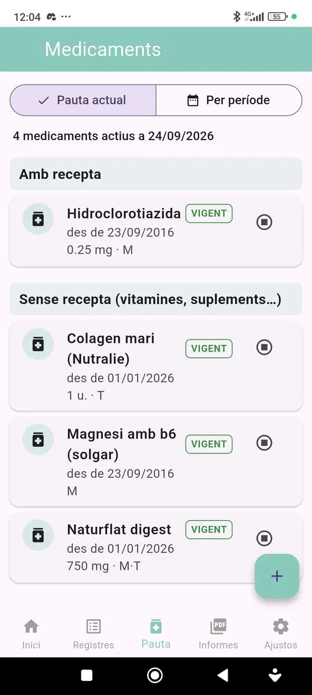
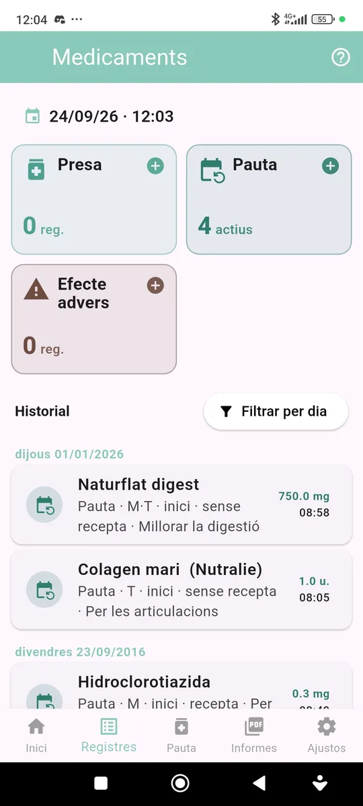
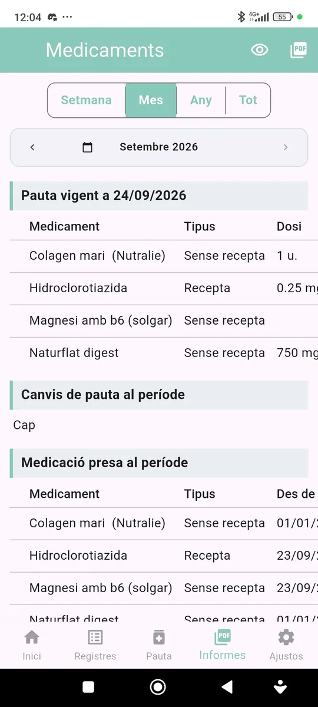

Mòdul Medicaments
Manual de Medicaments
Guia pràctica per portar la teva pauta de medicació, registrar preses i generar un informe per al metge.

Dues maneres de registrar
Pauta actual
1. Consulta la medicació vigent
A la pestanya Pauta, l’opció Pauta actual mostra els medicaments que tens actius avui, separats en Amb recepta i Sense recepta (vitamines, suplements…). De cada medicament veus des de quan el prens, la dosi i la franja (M matí, T tarda, N nit).
2. Afegeix, modifica o finalitza
- Prem el botó + per afegir un nou tractament o una presa puntual.
- Prem un medicament per modificar-lo (dosi, franges, dates…).
- Prem el botó ⏹ per finalitzar un tractament i indica la data de final.
3. Per període
L’opció Per període mostra els tractaments que han estat vigents en un període (avui, 7 dies, 30 dies, 1 any o el que triïs) i les preses esporàdiques d’aquell període.
Registres

Fitxa del medicament
A Registres hi ha tres targetes: Presa, Pauta (mostra quants medicaments tens actius i obre la pestanya Pauta) i Efecte advers.
A la fitxa tries el medicament (la llista es forma amb els que ja has fet servir; si és nou, escriu-ne el nom), la dosi i la unitat, la franja, si és amb o sense recepta i, en els tractaments, si el seguiment és continu o amb registre diari de preses.
Informes

Informe per al metge
Tria el període i l’informe mostra:
- Pauta vigent a la data final del període.
- Canvis de pauta del període: inicis, canvis de dosi i finals.
- Medicació presa al període, amb les dates i el nombre de preses.